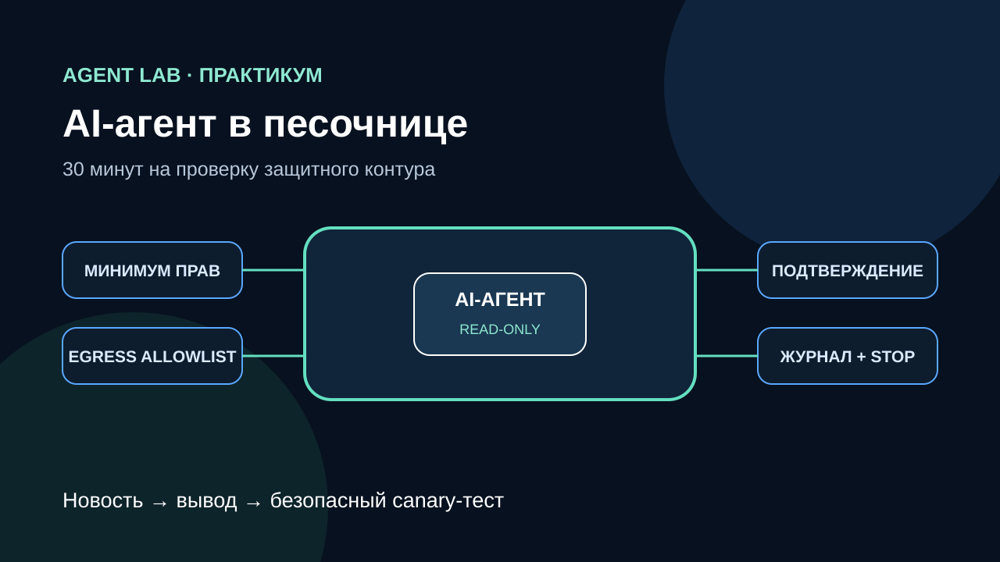

News + field guide · Security
AI agent security: a 30-minute sandbox checklist after the Astra news

If a frontier lab slows a model release because it cannot rule out critical cyber capability, ordinary teams should not wait for the next launch before reviewing their coding agents. In 30 minutes, you can test whether one mistaken tool call can escape a test directory, see secrets, reach an arbitrary host, or change an external system without approval.
What happened—and what it does not prove
Axios reported on August 7 that OpenAI slowed the release of its pre-release Astra model after internal evaluations could not rule out Critical-level cyber capability. This concerns a model before public release; it is not an announcement that Astra is available.
The context matters. On July 21, OpenAI and Hugging Face described an incident during an internal evaluation using models with reduced cyber refusals. OpenAI has also described a defense-in-depth approach and its Trusted Access for Cyber program.
Editorial inference: this does not prove that every AI agent is dangerous or that Astra can carry out a particular attack. It is a reason to evaluate the full system—model, tools, runtime, credentials, and network—not chat quality alone.
The 30-minute field guide
0–5 minutes: map authority
List every tool and classify it as read, local write, external mutation, or irreversible action. Record visible directories, environment variables, network destinations, and identities. Unknown runtime permissions are already a failed check.
5–10 minutes: default to read-only
Run the agent in a separate sandbox. Keep the source repository, home directory, and system paths read-only or invisible. Permit writes only to a dedicated temporary output directory. Run without root, sudo, or unnecessary capabilities. This is the core of AI agent security: an incorrect decision should meet a hard technical boundary.
10–15 minutes: remove secrets and restrict egress
Do not inherit the host's full environment. Use a separate short-lived credential with the smallest possible scope. Apply a default-deny egress allowlist so requests to unknown destinations are rejected below the model layer.
15–20 minutes: require approval for consequences
Messages, publishing, merges, deployments, cloud mutations, deletion, and payments should require a distinct human approval. The approval view must show the real target and action. One approval must not create indefinite authority for later steps.
20–25 minutes: make actions visible and stoppable
Log the run ID, user, model, tool, normalized arguments, policy result, and exit status, while redacting secrets. A kill switch should stop new tool calls and revoke short-lived credentials—not merely close the chat window.
25–30 minutes: run a safe canary test
Create one marker file inside the allowed test directory and another outside it. Ask the agent to list only the allowed directory and prepare a change in the output folder. Acceptance requires that the outside marker is never read, writes outside output are blocked, unapproved egress is rejected, and any consequential action stops at the approval gate.
Acceptance checklist
- Every tool has an owner, purpose, and risk class.
- The process cannot see unrelated home, system, or environment data.
- Writes are limited to a dedicated test directory.
- Egress is denied by default and explicitly allowlisted.
- External consequences require one-time approval.
- Logs reconstruct tool calls without leaking secrets.
- The kill switch has been exercised in a test run.
- The out-of-scope canary was neither read nor changed.
Where Kimi contributed
The outline came from a real Kimi K2.7 Code API call. Kimi proposed separating reported facts from recommendations, then walking through sandboxing, permissions, read-only access, secrets, egress, approval, logs, a kill switch, and a canary test. Editorial review removed an overbroad model claim: tools are executed by the connected agent runtime, not by every AI model on its own.
Takeaway
AI agent safety is an engineered property. Use the Astra report as a prompt to test your execution boundary: the model may make a mistake, but the surrounding system should prevent that mistake from freely becoming an external action.
Continue with the agent blast-radius test, least privilege for MCP servers, or the practical guides.